Akceptačné testovanie¶
Záložka GRAPH¶
| Zoznam ovládacích prvkov | Opis funkcionality | Status | Opis závady |
|---|---|---|---|
| 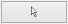 | manipulácia s prvkami grafu, nič neoznačuje | funkčné | |
 |
výber jedného prvku grafu | funkčné | |
 |
výber viacerých prvkov grafu | funkčné | |
 |
centrovanie pohľadu vzhľadom na vybraný prvok grafu | funkčné | |
| 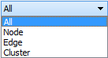 | typ výberu prvku grafu: všetko, iba uzly, iba hrany, klastre | funkčné | |
| 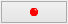 | pridanie meta uzla do grafu | funkčné | |
 |
odstránenie vybraných meta uzlov z grafu | nefunkčné | meta uzol sa nedá odstrániť zo scény |
 |
ukotvenie vybraných uzlov na aktuálnej pozícii | funkčné | |
| 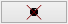 | uvoľnenie ukotvených uzlov | funkčné | |
 |
pridanie hrany medzi dvomi vybranými uzlami | funkčné | |
 |
pridanie uzla | funkčné | |
 |
odstránenie vybraných elementov (uzly alebo hrany) | funkčné | |
 |
výber farby pre zafarbenie uzla | nefunkčné | nedá sa vybrať iná farba ako čierna |
 |
aplikovanie vybranej farby na vybraný uzol | funkčné | |
 |
aplikovanie textového označenia na vybrané uzly podľa textu | nefunkčné | uzol sa po aplikovaní zmenší a táto akcia sa nedá vrátiť späť |
 |
zapnutie/vypnutie zobrazovania popisov uzlov a hrán | funkčné | |
 |
spustenie animovania rozmiestňovania uzlov grafu | funkčné | |
 |
zastavenie animovania rozmiestňovania uzlov | funkčné | |
| 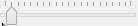 | zmena odpudivých síl pôsobiacich medzi uzlami | funkčné |
Záložka CONSTRAINTS¶
| Zoznam ovládacích prvkov | Opis funkcionality | Status | Opis závady |
|---|---|---|---|
 |
aplikovanie priestorového ohraničenia: povrch gule | funkčné | |
| 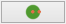 | aplikovanie priestorového ohraničenia: obsah gule | funkčné | |
 |
aplikovanie priestorového ohraničenia: rovina | funkčné | |
 |
aplikovanie priestorového ohraničenia: prienik gule a roviny | funkčné | |
 |
aplikovanie priestorového ohraničenia: kružnica | nefunkčné | nedá sa zmeniť priemer kružnice, po pokuse zmeniť priemer, nefunguje odstránenie ohraničenia |
| 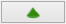 | aplikovanie priestorového ohraničenia: kužeľ | funkčné | |
 |
aplikovanie priestorového ohraničenia: kužeľový strom | funkčné | |
| 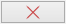 | odstránenie vybraných priestorových ohraničení | funkčné | |
 |
aplikovanie priestorového ohraničenia: povrch valca | funkčné | |
 |
aplikovanie priestorového ohraničenia: povrch kužeľa | funkčné | |
 |
aplikovanie radiálneho rozmiestnenia na označené uzly | funkčné | |
 |
výber módu vykreslenia radiálneho rozmiestnenia (drôtený, plný) | funkčné | |
 |
nastavenie módu 2D/3D radiálneho rozmiestnenia | funkčné | |
 |
|
funkčné | |
| prepínač medzi normálnou a vertigo kamerou | funkčné | ||
| 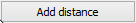 | zvýšenie vzájomnej vzdialenosti medzi rovinami | funkčné | |
 |
zníženie vzájomnej vzdialenosti medzi rovinami | funkčné | |
 |
pridanie dvoch paralelných rovín | funkčné | |
 |
odobranie dvoch paralelných rovín | funkčné | |
 |
zmena násobiča odpudivých síl medzi uzlami | nefunkčné | zmenou hodnoty sa uzly nehýbu |
 |
vypnutie všetkých predchádzajúcich obmedzení | funkčné |
Záložka CLUSTERING¶
| Zoznam ovládacích prvkov | Opis funkcionality | Status | Opis závady |
|---|---|---|---|
 |
zlúčenie vybraných uzlov | funkčné | |
 |
zrušenie zlúčenia vybraných uzlov | funkčné | |
 |
definovanie algoritmu, ktorým sa bude zhlukovať graf | funkčné | |
 |
nastavenie počtu rekurzií pre vybraný algoritmus | funkčné | |
| 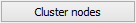 | spustenie zhlukovania nad aktívnym grafom | funkčné | |
 |
|
funkčné |
Po použití funkcie zhlukovania, sa odkryjú nasledujúce možnosti:
| Zoznam ovládacích prvkov | Opis funkcionality | Status | Opis závady |
|---|---|---|---|
 |
auto - automatická priehľadnosť - mení sa na základe vzdialenosti zhlukov od kamery selected - priehľadnosť označeného zhluku |
funkčné | |
| 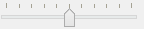 | pomocou posuvníka sa mení priehľadnosť len označených zhlukov | funkčné | |
 |
posúvaním sa mení prahová hodnota, pri ktorej sa menia tvary zhlukov - spodné číslo udáva, koľko uzlov obsahuje daný zhluk | funkčné |
Pri označení konkrétneho zhluku sa odkryjú nasledujúce možnosti:
| Zoznam ovládacích prvkov | Opis funkcionality | Status | Opis závady |
|---|---|---|---|
| 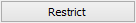 | kliknutím zmeníme označený zhluk na obmedzovač | nefunkčné | pri pokuse o otestovanie program spadne |
 |
znovurozmiestnenie uzlov v priestore po tom, ako sa nalepia na hranu – obmedzovača | neotestované | nie je možné otestovať kvôli problému s Restrict |
| 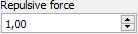 | upravenie odpudivej sily medzi uzlami v označenom zhluku - čím je hodnota väčšia, tým budú uzly ďalej od seba | neotestované | nie je možné otestovať kvôli problému s Restrict |
Záložka CONNECTIONS¶
| Zoznam ovládacích prvkov | Opis funkcionality | Status | Opis závady |
|---|---|---|---|
 |
meno, pod ktorým bude používateľ vystupovať v kolaborácii | funkčné | |
| 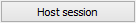 | spustenie/zastavenie servera | funkčné | |
 |
IP adresa servera | funkčné | |
 |
pripojenie(odpojenie) ku(od) kolaborácii | funkčné | |
| 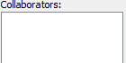 | zoznam používateľov | funkčné | |
 |
Spy - získa používateľ pohľad iného používateľa Center - nasmeruje pohľad používateľa tak, aby v jeho strede bol iný používateľ Shout - iným používateľom sa v scéne zobrazí pri vašom mene ikona znázorňujúca, že sa pokúšate upútať pozornosť |
funkčné | |
 |
nastavenie veľkosti avatarov v scéne | funkčné |
Záložka MORE FEATURES¶
| Zoznam ovládacích prvkov | Opis funkcionality | Status | Opis závady |
|---|---|---|---|
| ak je zaškrtnuté, kamera nasmerovaná a graf sa pohybuje na základe pohybu tváre, značky alebo rúk, inak sa na základe týchto akcií rotuje samotný graf | funkčné | ||
| povoľuje použitie kamery | funkčné | ||
 |
otvorenie okna pre prácu s kamerou | funkčné | |
 |
otvorenie okna pre prácu s hlasovým ovládaním | neotestované | Speech je momentálne vylúčený z projektu |
 |
zapnutie ovládania pomocou Leap Senzoru | funkčné |
Možnosti okna otvoreného po kliknutí na vyššie uvedené tlačidlá:
| Zoznam ovládacích prvkov | Opis funkcionality | Status | Opis závady |
|---|---|---|---|
| 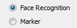 | prispôsobenie l’avej strany okna pre ovládanie funkcionality rozpoznávania tváre | funkčné | treba pri zapinani zaskrtnut Camera rotation a Camera enabled |
 |
zvolenie kamerového zariadenia a následným potvrdením objavenie záberu z kamery s rozpoznávaním tváre (graf sa pohybuje na základe pohybu tváre) | funkčné | |
 |
prispôsobenie l’avej strany okna pre ovládanie funkcionality rozpoznávania značky | funkčné | |
 |
zvolenie kamerového zariadenia a následným potvrdením objavenie záberu z kamery určenej pre rozpoznávanie značky a graf sa začne otáčať a pohybovať so značkou | funkčné | |
| nastavenie aktuálne snímanie ako pozadie pre graf | funkčné | ||
 |
prepínanie medzi pohybom podľa značky ako keby sa kamera pozerala na používateľa a naopak | neotestované | nepodarilo sa vykonať test |
| 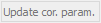 | nastavenie korekčných parametrov | neotestované | nepodarilo sa vykonať test |
| 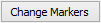 | zmena spôsobu použitia značky v prípade, že používateľ má k dispozícii len jednu značku | funkčné | |
| vypnutie/zapnutie zobrazenia videa | funkčné | ||
 |
zapnutie detekcie Kinectom | funkčné | |
 |
zachytenie kádra s následnou možnosťou dať ho na pozadie | neotestované | nepodarilo sa vykonať test |
 |
prepínanie medzi detekovaním ruky pre manipuláciu grafu alebo kamery v podobe rotovania a medzi detekovaním ruky pre funkciu “klik” (pohyb ruky do hĺbky, nie vertikálne alebo horizontálne) | funkčné | |
 |
vypnutie možnosti približovania | funkčné | |
 |
nastavenie práce s arucom (manipulácia grafu pomocou značiek) | funkčné |
Hlavné okno¶
| Zoznam ovládacích prvkov | Opis funkcionality | Status | Opis závady |
|---|---|---|---|
 |
filtrovanie hrán | funkčné | nefunguje na operačnom systéme Windows |
 |
filtrovanie uzlov | funkčné | nefunguje na operačnom systéme Windows |
| 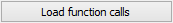 | zobrazí dialóg pre výber súborov; po vybratí vykreslí do poľa pod tlačidlom graf volaní funkcií týchto súborov | funkčné | nefunguje na operačnom systéme Windows |
 |
prepínanie medzi zobrazovaním jedného prehliadača pre každý uzol a zobrazovaním jedného prehliadača pre všetky vyznačené uzly | funkčné | nefunguje na operačnom systéme Windows |
| File – načítanie grafu zo súboru | načítanie grafu do scény | funkčné | |
| File - načítanie grafu z databázy | načítanie grafu do scény | neotestované | nie sú k dispozícii grafy v databázovej podobe |
| File - uloženie grafu | uloží graf | neotestované | možnosť bola implementovaná pre databázové riešenie |
| File - uloženie layout | ponúkne možnosť nazvať layout a uloži ho | neotestované | možnosť bola implementovaná pre databázové riešenie |
| File - ukončenie aplikácie | ukončí aplikáciu | funkčné | |
| Settings | nastavenia jednotlivých parametrov aplikácie | funkčné |